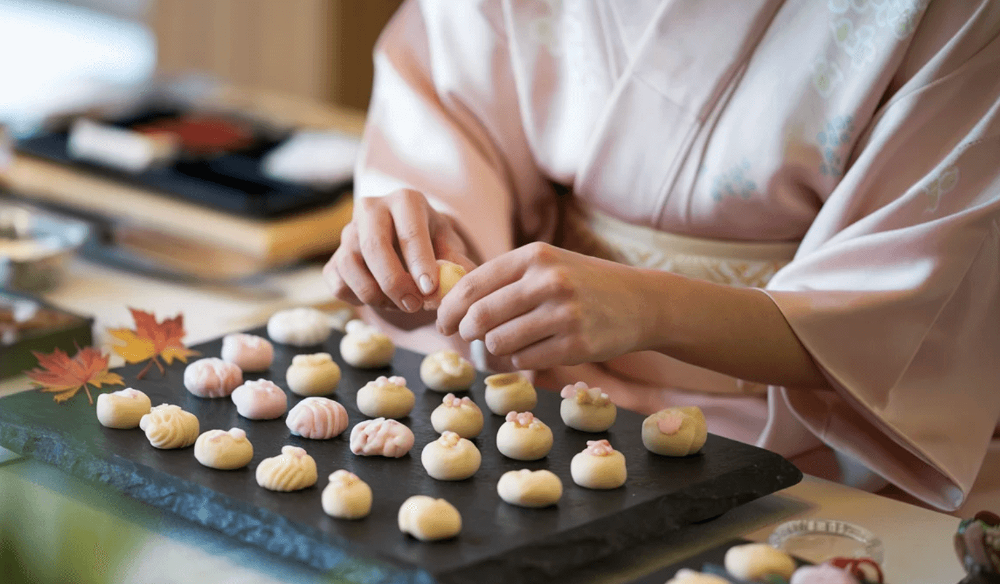

體驗「小住」的哲學：與京都的呼吸同步
京都，這座千年古都，從來都不是用腳步丈量的地方，而是用心感受時間流動的場域。我們所提倡的「小住」（Kozumi），不同於走馬看花的觀光，它是一種將自己置入京都日常肌理的短期居住哲學。透過延長停留的時間，我們才能真正擺脫旅遊的喧囂，與這座城市古老的節奏同步。
「慢生活」在京都不是刻意放緩的行為，而是一種融入骨血的常態。清晨五點，當城市仍籠罩在薄霧中，您可以漫步在寂靜無人的禪院石板路上，感受木質建築散發出的靜謐禪意。這份寧靜，是京都獻給早起者的禮物，也是讓心靈沈澱的儀式。

町家與庭院：品味光影流動的場所
要體驗京都的慢，就必須從居住開始。選擇一間修復後的「京町家」（Kyo-Machiya）短期租賃，是最好的方式。這些傳統木造房屋有著狹長的空間設計，中間往往隱藏著一個精緻的「坪庭」（Tsubo-Niwa）。坪庭不僅是採光和通風的裝置，更是微觀宇宙的體現。
每日的儀式，從清晨對著坪庭沏一壺宇治茶開始。看著茶湯的顏色，觀察庭院中苔蘚、石燈籠和水缽上的光影變化。這不是浪費時間，而是將時間凝結，專注於當下的細微美感。坪庭的四季變化，教導居住者對環境的敏感，是對自然的敬重，也是對侘寂（Wabi-Sabi）美學的實踐。

職人精神與日常工藝的深度接觸
慢生活的另一個核心是「職人精神」。在京都，工藝品不僅是商品，更是時間與心力累積的結晶。小住期間，您可以將日常活動轉化為文化體驗：在西陣地區找尋和服織造的匠人，在清水寺周邊參觀陶瓷燒製的工房。與這些職人交談，你會明白，他們堅持的不是速度，而是對細節的極致追求，以及對材料的尊重。
從一杯茶碗的溫度、一塊和菓子的甜度，到一塊風呂敷（Furoshiki）的圖案，京都的工藝無所不在，且充滿哲思。在京都的菜市場採買食材，用當地職人製作的刀具處理，再用他們燒製的陶器盛放，這整個過程，便是對慢生活美學最完整的實踐。
讓哲學滲入日常：尋找生活的間隙
「小住」的最終意義，是訓練我們去尋找生活中的「間隙」（Ma, 間）。當我們在京都搭乘公車、等候拉麵，或在鴨川岸邊發呆時，不再焦慮於時間的流逝，而是享受這份獨處與留白。京都的城市設計本身就充滿了「間」的美學：寺廟間的林蔭小徑、路邊不起眼的水渠，都是讓人慢下來的空間。
這份慢，最終目標是讓我們將這份美學帶回自己的生活。學會像京都人一樣，在忙碌中找到專注的時刻，在平凡中發現工藝的精華。這就是「到京都小住」的價值：它不是一段旅程的結束，而是對美好生活重新開始的覺醒。